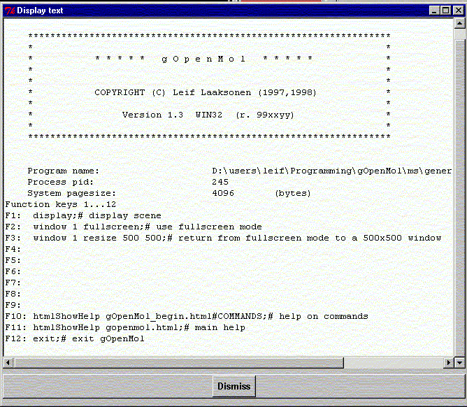

**************************************************************************
Text output widget
Leif Laaksonen CSC 1999
**************************************************************************
While running gOpenMol the program writes a lot of messages or results from various calculation routines to the output. The text can be seen in the window that started the process. However, if you are running Windows you will not be able to scroll the window. Some times some commands generates also a lot of output and one wants to cut and past the result to other applications. By opening the text output widget one gets a better control over the text output.

**************************************************************************
LUL/1999
**************************************************************************